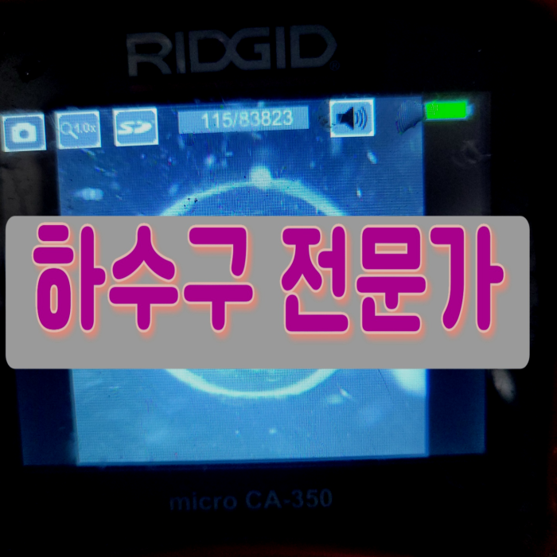
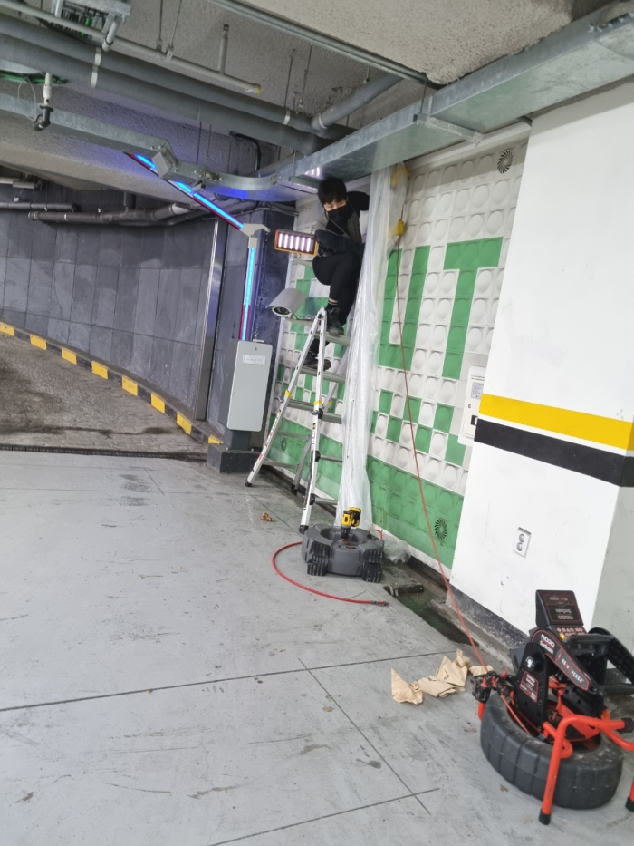
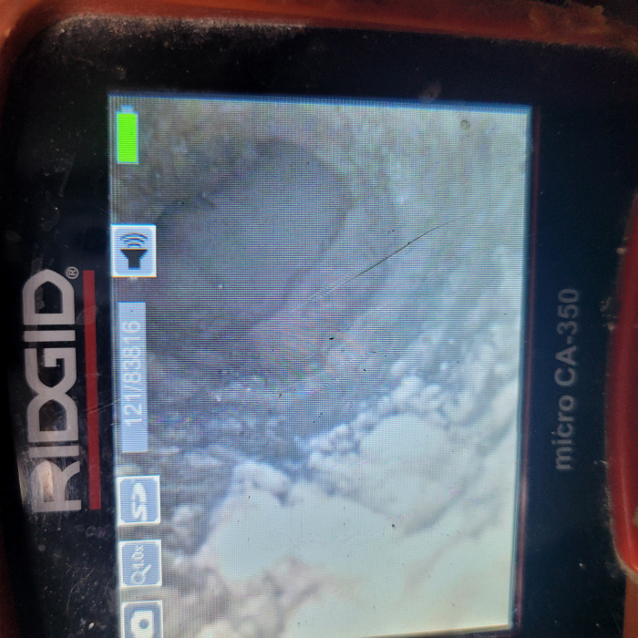
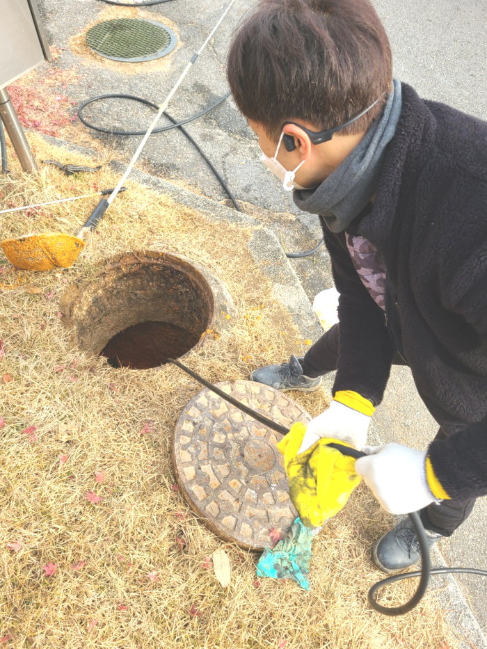
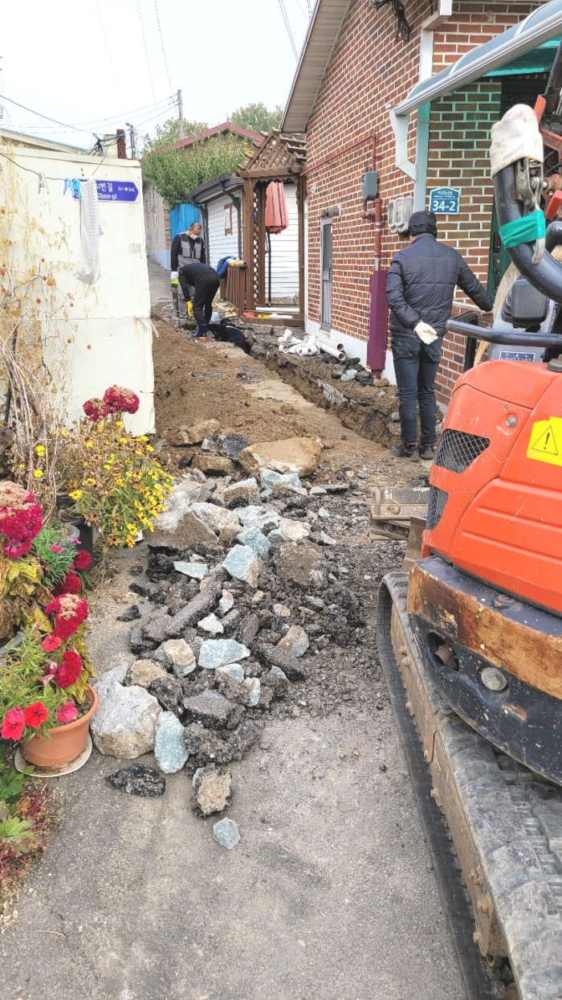
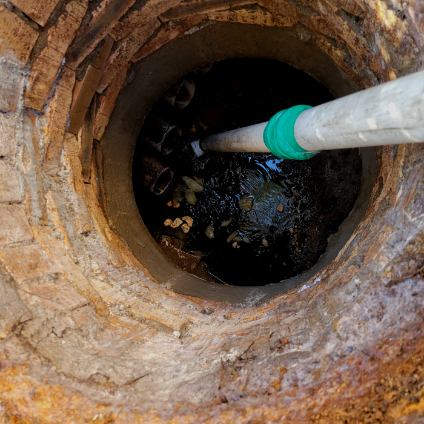
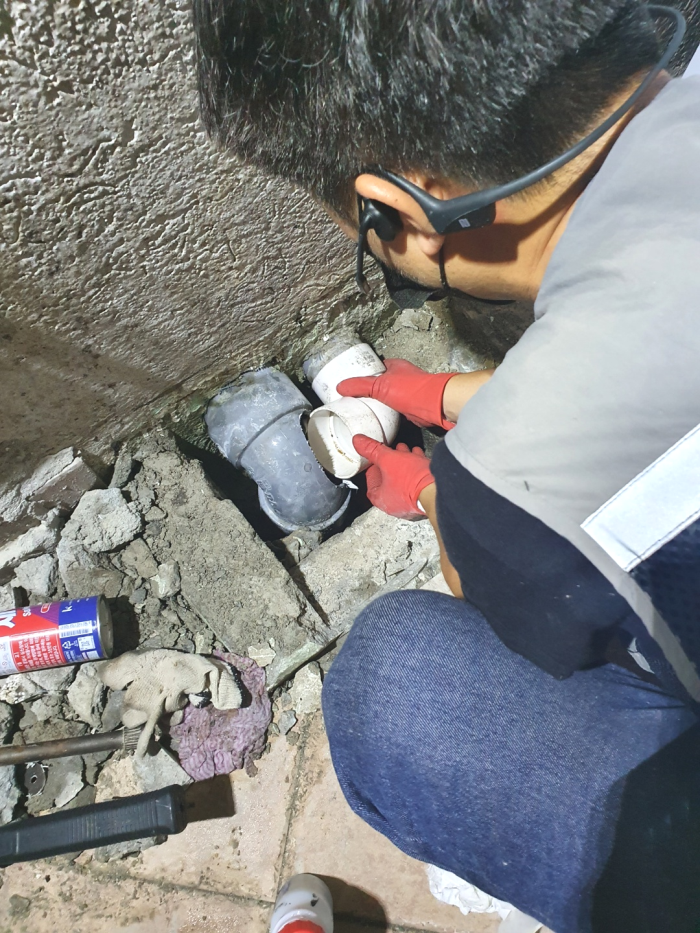

🏠 중구 오장동 배수구막힘 광희동 하수도역류 배관청소 설비 공사
용인 싱크대막힘 전문 시공 후기

📋 작업 개요
- 위치: 용인
- 서비스 유형: 싱크대막힘, 변기막힘, 하수구막힘, 배관막힘, 역류해결, 뚫는업체, 배관청소, 고압세척, 설비공사
- 작업 일시: 2024. 2. 5. 0:23
- 업체명: 하수구수사대 (010-5615-2118)
🔍 문제 상황
반갑습니다^^
설비전문업체 "하수구수사대"를 찾아주셔서 고맙습니다^^
이번글에선 막혀버린 배수구 배관해서 말해드리겠습니다.빌라등 물을사용해야하는 곳이있다면 배수구가 존재하는데요. 이러하듯 당연한존재가 막히면 곤혹스러울텐데요. 문제없이 쓰고있던 배수구시설이 갑자기 망가진다면 불편해지게됩니다.

🔎 원인 분석
💡 전문가 진단: 중구 오장동 배수구막힘 광희동 하수도역류 배관청소 설비 공사
중구 오장동 배수구막힘 광희동 하수도역류 배관청소 설비 공사
관리사무소 같은 곳에서는 배출관전문장비없에이 도와주시기 때문에 정확하게 막힌 지점을 뚫어낼 수가 없으서 며칠이 지나지 않아 다시 막혀버릴 것 입니다. 뿐만 아니라 뚫는 장비가 여러가지 있는데 가능한 많이 보유하고 있지 않으면 실패할 수도 있습니다.
이번 현장은 배관한 곳만 스케일링 소용이 없어서 반대쪽으로 이동하여 시도해 보았어요. 첫 번째로는 주름 호스에 납아 있던 노폐물들을 석션기를 이용하여 처리해 드렸어요. 배수관 시원찮게 빠진다고 하시기에 욕실 배수구 쪽도 놓치지 않고 함께 보았어요.
대부분의 경우에는 제대로 배출관막힘을 해결을 하지 못하고 또다시 막히거나 배관 손상으로까지 이어질 수 있게 되는 것입니다. 그러므로 빠르고 정확한 해결을 위해서는 전문 업체를 통해서 해결을 하시는 것이 필요합니다.

🔧 작업 과정
슬러지가 막혀 있는 부분이 있었기 때문에 정비를 해드리기로 했습니다. 이곳처럼 단독 건물의 경우 배출관 배관의 규격이나 상태가 좋은 편은 아니라서 슬러지가 단단하게 막히는 현상이 나타나면 작업이 쉽지 않은 편입니다. 그래서 오랜 경험을 가진 배출관전문가에게 직접 진행을 맡겨야 하죠.
눈에보이지않는곳까지 이물질들이누적되어있거나 상당수 퇴적되었다면 눈에띄는개선을 기대할순없죠 특히가정에서 하수도 배관이 막히게된다면 물을사용하는데있어 안좋은영향을끼쳐 크고작은불편이생기게되요 이런상황이라면 전문가에게의뢰를해서 해결하는것이 가장안전한방법이에요
하수관현장의 풍부한 사례를 바탕으로 어느 부분이 원인인지를 찾아내어 그에 맞는 방안을 도입해야 하는 것이 중요합니다. 그래서 타업체가 실패하거나 작업 후 같은 상황이 발생한 곳도 도맡아 신속하게 해결해 드리고 있습니다. 그렇다면 하수관관 관련해서 말썽이 생겨 업체에 연락해야 할 때 필수적으로 체크해야 할 조건들은 무엇일까요?
하수도 문제를 방치하면 밑에 층과 연결되어 엄청난 문제를 일으킬 수 있습니다. 따라서 하수도문제의 원인을 찾아내고 올바른 방법으로 작업해야 합니다. 막힌 하수도배수관을 해결하기 위해서는 어떤 상황에서도 대처할 수 있는 전문장비와 경험이 필요합니다. 시간이 지날수록 문제는 악화될 뿐만 아니라 비용도 더 많이 발생할 수 있습니다.
그렇게 한참을 샤프트 장비로 분쇄해 주고 석션기로 떨어트린 이물질을 꺼내는 작업을 반복합니다. 엄청나게 단단하게 굳어있던 석회들까지 아래층으로 내려가 도움을 받지 않고도 고객님 댁에서만 작업을 진행하였습니다.
세척을 끝내고 배출관에 돌아가 많은 양의 물을 한 번에 부어보니 작은 소용돌이 모양을 만들며 빠르게 내려가는 것으로 확인되었습니다. 배출관내시경을 통해서도 외부까지 연결된 배출관배관 상태가 말끔해진 것을 체크하였고, 이후 마감 작업까지 꼼꼼하게 해드렸습니다.


✅ 작업 완료
수도권 전지역 어디든지 1시간안에 방문하여 처리해 드리겠습니다. 열과 성을 다해 배출구문제를 해결해 드리겠습니다.
#하수구막힘 #하수구뚫음 #하수구역류 #씽크대막힘 #싱크대역류 #오수관막힘 #하수구청소 #욕실하수구막힘 #변기막힘 #하수구뚫는비용 #싱크대수리 #화장실막힘




⚠️ 주방 싱크대 배관 막힘 예방 수칙
- ✅ 기름기가 묻은 식기나 프라이팬은 설거지 전 키친타올로 반드시 기름때를 닦아내세요.
- ✅ 주기적으로 싱크대 개수대에 뜨거운 물을 가득 받아 한 번에 내려 배관 내부 기름을 씻어내세요.
- ✅ 배수구 거름망을 미세한 필터로 사용하시고 음식물 찌꺼기가 틈으로 새어 들지 않게 관리하세요.
- ✅ 베이킹소다와 식초를 뜨거운 물과 함께 일주일에 한 번씩 부어주면 배관 살균과 막힘 예방에 좋습니다.
💡 핵심 정리
- 확실한 장비 작업(내시경 점검 및 샤프트 스케일링)으로 원인을 뿌리 뽑습니다.
- 작업 후 1년 이내에 동일한 부위 재발 시 100% 무상 A/S 서비스를 보장합니다.
- 서울 · 경기 · 인천 전 지역에 24시간 언제든 긴급 출동할 수 있도록 항시 대기 중입니다.
❓ 자주 묻는 질문 (FAQ)
🚨 용인 싱크대막힘 문제로 고민이신가요?
정확한 원인 진단과 확실한 시공으로 재발 없는 해결을 약속드립니다.
24시간 긴급 출동 | 서울 · 경기 · 인천 전지역 | 1년 내 재발 시 무상 A/S